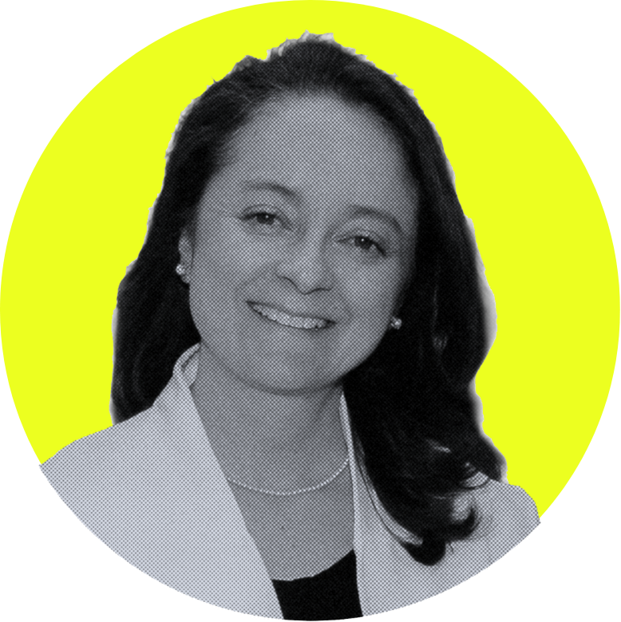

Caroline Buckee
Caroline Buckee
Caroline Buckee es profesora de epidemiología en la Universidad de Harvard y
utiliza modelos matemáticos y ciencia de datos para entender cómo
se propagan enfermedades infecciosas como la malaria. Su investigación
integra datos epidemiológicos y de movilidad humana para estudiar los patrones de
transmisión. Obtuvo su D.Phil en Epidemiología Matemática en la Universidad de Oxford.
cbuckee@hsph.harvard.edu

Vladimir Corredor
Vladimir Corredor
Vladimir Corredor Espinel es profesor asociado de la
Universidad Nacional de Colombia, con amplia trayectoria en
parasitología de la malaria y genética molecular del Plasmodium.
Obtuvo su doctorado en NYU y actualmente investiga la
diversidad genética del P. falciparum en el
Pacífico colombiano y los factores sociales que influyen en la eliminación de la malaria.
vcorredore@unal.edu.co

María Angélica Riascos
María Angélica Riascos
María Angélica Riascos es bióloga con experiencia en entomología de
vectores de malaria, especialmente en el manejo de insectarios de Anopheles albimanus en
la costa pacífica caucana. Ha trabajado como entomóloga de laboratorio y coordinadora en
proyectos financiados por USAID en regiones rurales de difícil acceso.
Tiene una maestría en Enseñanza de las Ciencias y actualmente es docente de
ciencias naturales en Guapi.
mariarc@unicauca.edu.co

Liliana Mosquera
Liliana Mosquera
Liliana Yasiri Mosquera es una profesional interdisciplinaria con experiencia en gestión territorial,
incidencia comunitaria para la salud pública rural en el Pacífico colombiano.
Es magíster en Educación por la Universidad Iberoamericana de Pasto y actualmente
trabaja en el Ministerio de Agricultura y Desarrollo Rural, fortaleciendo la gobernanza
comunitaria y las alianzas rurales desde la Dirección de la Mujer Rural.
lilianaymosquera14@gmail.com

Leyla Yunis
Leyla Yunis
Leyla es diseñadora computacional y arquitecta con
experiencia en investigación y educación STEAM. Dirige el Maker Institute
en Praga y co-lidera Architects of Change, un programa de aprendizaje
experiencial basado en proyectos. Su trabajo integra diseño sostenible,
nuevas tecnologías y metodologías inspiradas en la naturaleza para desarrollar
talleres adaptados a contextos locales.
leyla.yunis.marulanda@gmail.com

Andrea Parra-Salazar
Andrea Parra-Salazar
Andrea es estudiante de doctorado en Epidemiologia en la Universidad de Harvard.
Su investigación se centra en la malaria, las prácticas extractivas en
la Amazonía y el uso de sistemas de información para apoyar iniciativas
comunitarias de salud. Tiene formación en ingeniera mecánica y artes plásticas
de la Universidad de Virginia y tiene una maestría en Ciencias de la Computación de la
Universidad de los Andes.
andreaparra@g.harvard.edu

Angélica Knudson
Angélica Knudson
Angélica es médica cirujana y doctora en Salud
Pública de la Universidad Nacional de Colombia. Es docente asociada de
tiempo completo en el Departamento de Salud Pública de la Facultad de Medicina
de la misma universidad, donde su trabajo se enfoca en la intersección
entre salud comunitaria, formación en ciencias y territorios con barreras
de acceso.
raknudsono@unal.edu.co